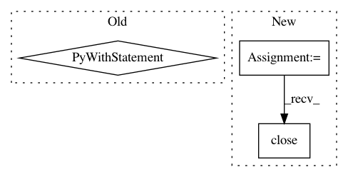

68d7d6a3cb18578616ae2f3b445b6ba87fd6baf3,dvalib/facerecognition.py,,represent,#Any#Any#Any#,109
Before Change
logging.info("Forward pass took avg of %.3f[seconds/image] for %d images\n" % (time_avg_forward_pass, nrof_images))
logging.info("Finally saving embeddings and gallery to: %s" % (output_dir))
np.save(os.path.join(output_dir, "facenet.npy"), emb_array)
with open(os.path.join(output_dir, "facenet.framelist"),"w") as fh:
for c in range(count):
fh.write("{}\n".format(path_count[c]))
return path_count,emb_array
After Change
emb_array = np.zeros((nrof_images, embedding_size))
count = 0
path_count = {}
fh = open(os.path.join(output_dir, "facenet.framelist"),"w")
for i in xrange(nrof_batches):
start_index = i * batch_size
end_index = min((i + 1) * batch_size, nrof_images)
paths_batch = paths[start_index:end_index]
for fname in paths_batch:
count += 1
fh.write("{}_{}\n".format(fname,paths_to_pk[fname]))
images = facenet.load_data(paths_batch, do_random_crop=False, do_random_flip=False,image_size=image_size, do_prewhiten=True)
feed_dict = {images_placeholder: images, phase_train_placeholder: False}
emb_array[start_index:end_index, :] = sess.run(embeddings, feed_dict=feed_dict)
time_avg_forward_pass = (time.time() - start_time) / float(nrof_images)
logging.info("Forward pass took avg of %.3f[seconds/image] for %d images\n" % (time_avg_forward_pass, nrof_images))
logging.info("Finally saving embeddings and gallery to: %s" % (output_dir))
np.save(os.path.join(output_dir, "facenet.npy"), emb_array)
fh.close()
return path_count,emb_array
In pattern: SUPERPATTERN
Frequency: 4
Non-data size: 3
Instances
Project Name: AKSHAYUBHAT/DeepVideoAnalytics
Commit Name: 68d7d6a3cb18578616ae2f3b445b6ba87fd6baf3
Time: 2017-03-06
Author: akshayubhat@gmail.com
File Name: dvalib/facerecognition.py
Class Name:
Method Name: represent
Project Name: ray-project/ray
Commit Name: 28b1f7710c87088bbb266a6a6c644c2e7c828805
Time: 2020-08-03
Author: 2522134184@qq.com
File Name: python/ray/tests/test_failure.py
Class Name:
Method Name: test_connect_with_disconnected_node
Project Name: google/deepvariant
Commit Name: 7ed8c6bbcfb2dc0da9b1011ba21d12791239de79
Time: 2019-10-21
Author: gunjanbaid@google.com
File Name: deepvariant/postprocess_variants.py
Class Name:
Method Name: main
Project Name: ray-project/ray
Commit Name: 898e47242527e402f4d014fd084c31843d64d1b8
Time: 2020-06-27
Author: mehrdadn@users.noreply.github.com
File Name: python/ray/test_utils.py
Class Name:
Method Name: run_string_as_driver_nonblocking